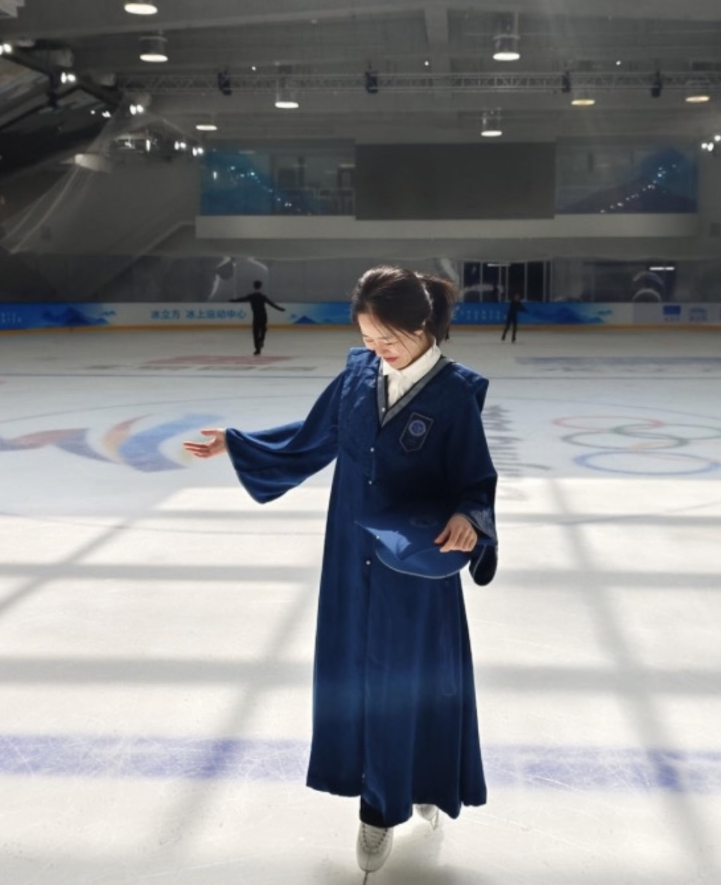

Hi, this is Yiwen Zhao
Welcome to My Portfolio

I'm currently a first-year MSCV student at the Robotics Institute, Carnegie Mellon University, working with Prof. Shinji Watanabe and Prof. László A. Jeni on audio and motion. Before that, I earned my bachelor's degree from Beijing Normal University in June 2024.
There are three things that keep me going: Generative Models, Figure Skating, and Winnie the Pooh.
I’ve had the great honor of working with Prof. Teng Han, Prof. Yongzhen Huang, and Prof. Shanghang Zhang during my undergraduate study. There are also many senior colleagues and mentors who have given me invaluable advice and guidance. My deepest thanks go to them, for they generously offered me opportunities to explore and experiment.